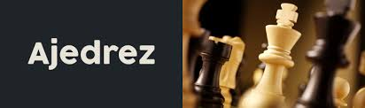

Cuando el juego comienza, un jugador controla 16 piezas blancas y otro jugador controla 16 piezas negras. El color asignado a cada jugador suele sortearse, aunque en el caso de los torneos está en función del emparejamiento de los jugadores. El tablero es colocado de tal forma que ambos jugadores tengan un escaque blanco en la casilla de la esquina derecha respectiva. Las piezas se ubican de la forma en que se muestra en el diagrama adyacente.


Piezas de ajedrez